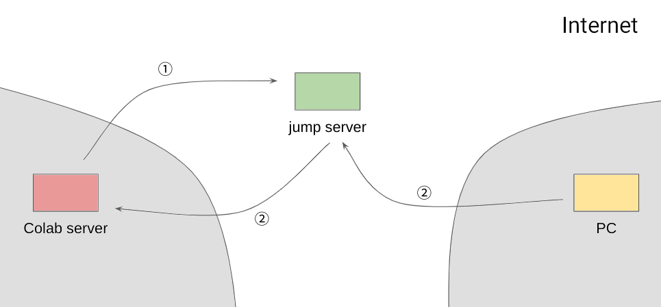

Google Colab 提供了免费的服务器资源。然而，Google Colab 只提供了网页的操作界面，不能像平时操作服务器一样在真实的终端中输入命令。为此，可以借助中转服务器，使用 ssh 连接 Google Colab。
为了通过 ssh 连接 Google Colab，需要一个有公网 IP 的中转服务器。通过端口转发，将 Google Colab 的 ssh 端口转发到中转服务器上，然后在 PC 上通过中转服务器连接 Google Colab。

在 Google Colab 单元格中执行以下命令：
import os
for k, v in os.environ.items():
print(k, v)在 PC 执行以下命令查看 SSH 公钥：
cat ~/.ssh/id_rsa.pub在 Google Colab 单元格中执行以下命令：
%%sh
mkdir -p ~/.ssh
echo '<PC 的 SSH 公钥>' >> ~/.ssh/authorized_keys
apt update > /dev/null
yes | unminimize > /dev/null
apt install -qq -o=Dpkg::Use-Pty=0 openssh-server pwgen net-tools psmisc pciutils htop neofetch zsh nano byobu > /dev/null
ssh-keygen -t rsa -N "" -f ~/.ssh/id_rsa > /dev/null
echo ListenAddress 127.0.0.1 >> /etc/ssh/sshd_config
mkdir -p /var/run/sshd
/usr/sbin/sshd其中，<PC 的 SSH 公钥> 需要替换为上一步查看的 SSH 公钥。
在 Google Colab 单元格中执行以下命令查看 SSH 公钥：
!cat ~/.ssh/id_rsa.pub在中转服务器执行：
echo '<Google Colab 的 SSH 公钥>' >> ~/.ssh/authorized_keys其中，<Google Colab 的 SSH 公钥> 需要替换为上一步查看的 SSH 公钥。
!ssh -N -T -C -o StrictHostKeyChecking=no -R 127.0.0.1:28822:127.0.0.1:22 <user>@<hostname>其中，<user> 和 <hostname> 分别为中转服务器的用户名和 IP 地址。
修改 ~/.ssh/config：
Host jumpserver
User <user>
HostName <hostname>
Host colab
User root
HostName 127.0.0.1
Port 28822
ProxyJump jumpserver其中，<user> 和 <hostname> 分别为中转服务器的用户名和 IP 地址。
在 PC 执行以下命令登录 Google Colab：
ssh colab当重新启动 Google Colab 运行环境时，Google Colab 的 host key 会发生变化，导致无法登录。解决方法是在 PC 执行以下命令，删除原来储存的 host key：
ssh-keygen -R "[127.0.0.1]:28822"sh -c "$(curl -fsSL https://raw.github.com/ohmyzsh/ohmyzsh/master/tools/install.sh)"由于 Google Colab 是 docker 镜像，直接修改时区会发生错误：
Failed to create bus connection: No such file or directory可以通过环境变量的方式修改：
echo 'export TZ=":Asia/Hong_Kong"' >> ~/.zshrcapt install -y software-properties-common
add-apt-repository -y ppa:deadsnakes/ppa
apt install -y python3.10-full python3.10-dev为了防止 SSH 连接中断后，运行的程序就停止，应该在登录 SSH 后使用 byobu 命令打开 Byobu 会话，然后在 Byobu 会话中运行程序。这样即使 SSH 连接中断，重新登录后再次使用 byobu 命令就可以恢复原来的会话。
neofetchhtop在启动 8 小时左右，服务器资源会被回收。为了防止数据丢失，可以定期将中间结果保存到 Google Drive 中。将 Google Drive 挂载到 Google Colab 的方法是在 Google Colab 单元格中执行：
from google.colab import drive
drive.mount('/content/gdrive')然后按提示操作。
在 Google Colab 的单元格中执行以下命令：
import torch
print(torch.cuda.get_device_name())如果 GPU 型号不理想，可以尝试重新启动 Google Colab 运行环境。
LD_LIBRARY_PATH=/usr/lib64-nvidia watch -n 1 nvidia-smi不能直接使用 export LD_LIBRARY_PATH=/usr/lib64-nvidia，这样会导致某些程序不能使用 GPU。
在 Shell 中执行：
export COLAB_TPU_ADDR=<COLAB_TPU_ADDR>其中 <COLAB_TPU_ADDR> 需要替换为第一步中打印出的 COLAB_TPU_ADDR 环境变量的值。
在 import jax 前执行：
from jax.tools.colab_tpu import setup_tpu
setup_tpu()然后 import jax 测试：
import jax
print(jax.devices())更多 TPU 用法请参看 TPU Starter。
（作于 2020 年 9 月 17 日，修订于 2022 年 4 月 16 日）